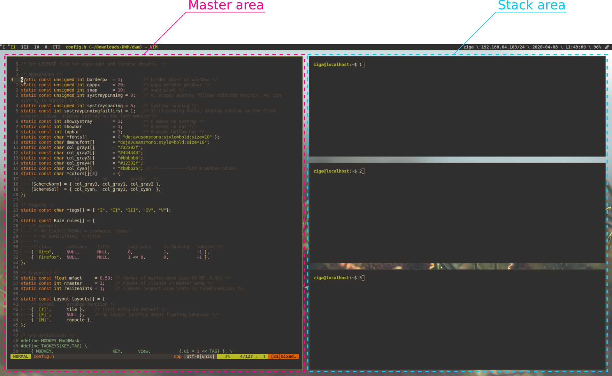

When I used neovim for a long time
I started to noticed that using the keyboard
to do things is way faster and more confortable
💡So why don't use vim keybinds EVERYWHERE ?
I was introduced to DWM. A very minimalist, fast window manager.

DWM uses all the screen real estate, automatically adjusting windows.
No more small windows that cover each other.

The config file is a part of the source code and you need to recompile every time you change something.
It's not a bug, it's a feature. Read more here